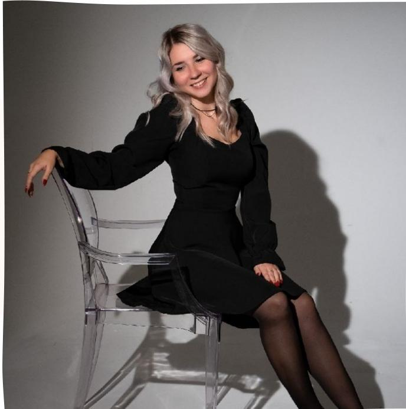
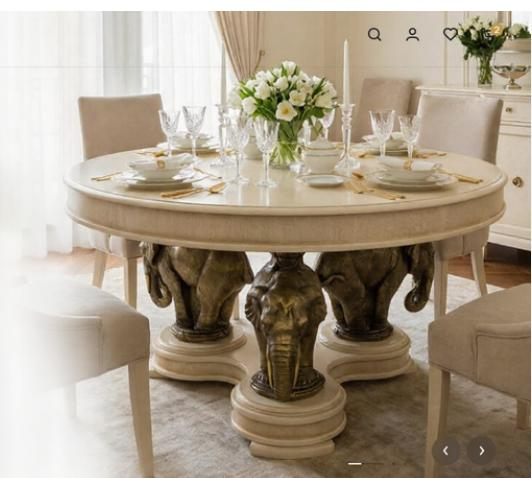
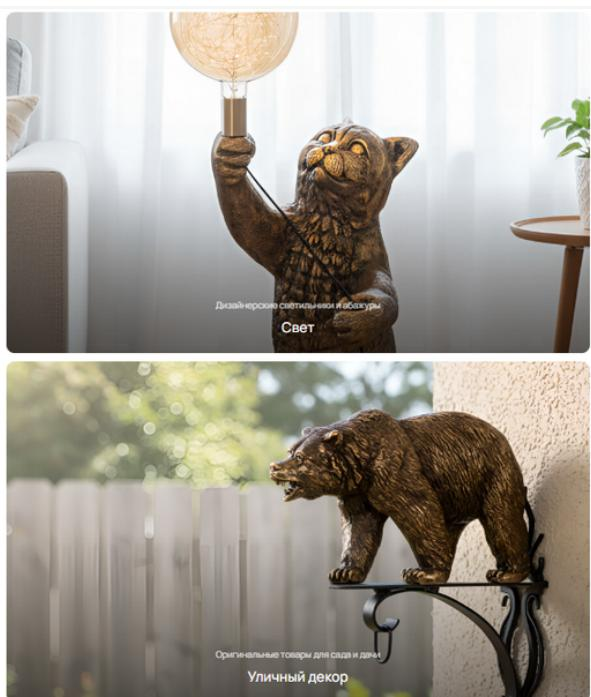
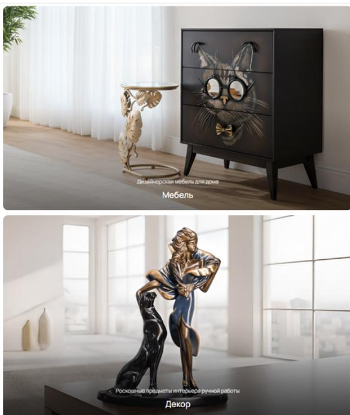
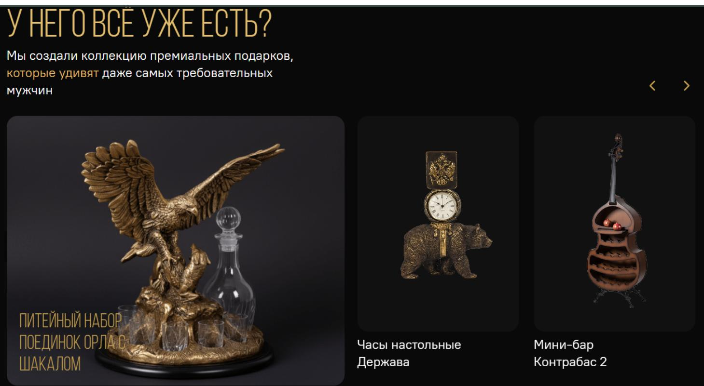
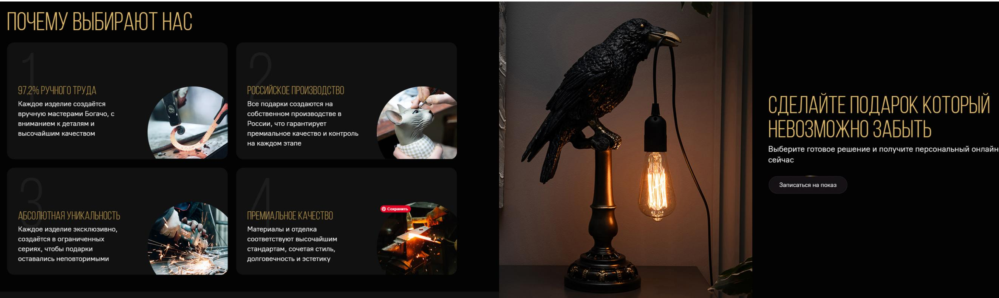
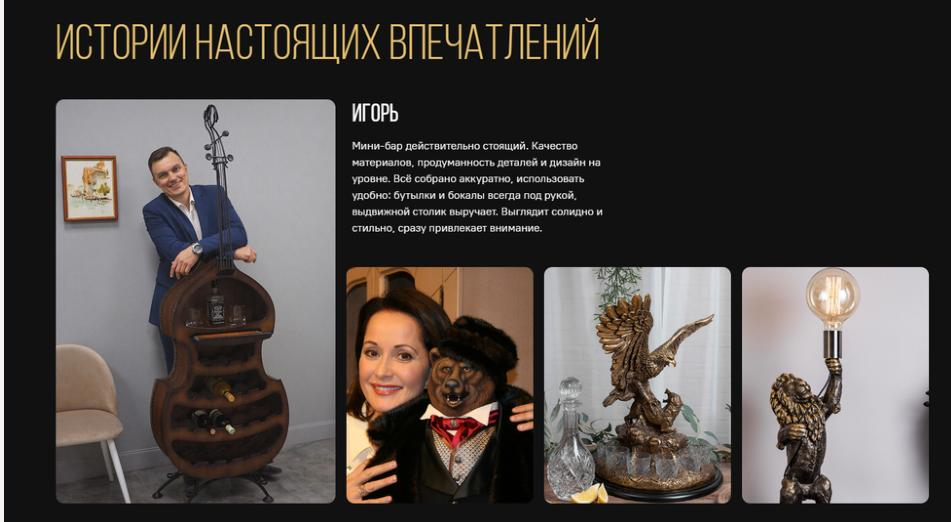

Контент-маркетолог · Цифровой маркетинг · Управление брендом
Строю присутствие бренда в интернете —
от карточки товара до стратегии, которая продаёт.

Контент-маркетолог и специалист по цифровому маркетингу с опытом 2,5 года. Работала в крупной федеральной розничной сети — управляла контентом сайта с каталогом из 8 000 позиций, развивала социальные сети на четырёх платформах, вела email-рассылки по базе 55 000 контактов и отвечала за репутацию бренда.
Умею работать самостоятельно: инициирую проекты, веду их от концепции до результата и отвечаю за цифры. Взаимодействую с разработчиками, дизайнерами и руководством — перевожу бизнес-задачи в конкретные решения и обратно.
Слежу за рынком инструментов: аналитика, рекламные кабинеты, системы автоматизации, нейросети для текста, изображений и видео.
За 2,5 года прошла путь от контент-менеджера до специалиста, который самостоятельно ведёт проекты, управляет подрядчиками и отвечает за метрики сразу нескольких направлений.
Пишу сама — от карточек каталога до SEO-статей и сценариев. Выстраиваю логику контента под задачи бизнеса, а не ради публикаций.
Развиваю сообщества на четырёх платформах, произвожу контент полного цикла самостоятельно и веду рекламные кампании без агентства.
Веду рассылки по базе 55 000+ контактов, разрабатываю механики пополнения базы. Показатели открываемости — выше среднего по нише.
Выстраиваю системную работу с отзывами: мониторинг → стандарт → аналитика причин. Рейтинг BOGACHO вырос с 4.2 до 4.9.
Управляю рекламным бюджетом до 600 000 ₽/мес через подрядчика, самостоятельно веду кампании в Telegram и VK — от креатива до аналитики.
Веду проекты от идеи до запуска, пишу ТЗ для IT, управляю командой из дизайнеров и разработчиков. Умею работать на уровне задачи и на уровне стратегии.
Федеральная розничная сеть · Контент сайта · Контроль качества · Bitrix, 1С
BOGACHO — федеральная сеть с каталогом 8 000+ позиций: мебель, декор, товары для дома. Сайт — основной канал продаж. На старте часть карточек не имела описаний, часть — корректных характеристик, структура категорий местами нарушала логику. Несогласованность в контенте такого масштаба напрямую бьёт по доверию и конверсии.
Привести каталог к стандарту, при котором покупатель получает полную и достоверную информацию о товаре. Это напрямую влияет на решение о покупке и ощущение от бренда.
Выстроить систему — не разовую «уборку», а процесс, при котором контент остаётся точным по мере роста каталога. Разработать стандарт карточки и внедрить его.
Поддерживала актуальность 8 000+ позиций: вариации по цвету, комплектации и размеру. Создавала карточки с нуля — описания, характеристики, визуал. Выявляла несоответствия в категоризации системно, а не по одной жалобе.
KPI: покрытие каталога описаниями и актуальность данных — до/после аудитаОписала структуру, обязательные поля, правила подачи характеристик и требования к фотоматериалам. Согласовала с дизайнером и продуктовой командой.
KPI: скорость подготовки новой карточки — сократилась на 40%Проверяла позиции перед публикацией. Выявила и передала в разработку 95 ошибок отображения, которые до этого никто системно не отслеживал.
KPI: 95 ошибок выявлено и устранено за период работыКаталог из 8 000+ позиций работает как единая система. Скорость подготовки карточек выросла на 40%. 95 ошибок отображения устранены. Покупатель на каждой странице получает полную и однородную информацию о товаре.



Координация команды · Маркетинговые механики · Контроль качества данных · Законодательные требования
Компания переходила на новую платформу Bitrix — полноценная миграция сайта с каталогом 8 000+ позиций, маркетинговыми механиками и интеграциями. Такие переезды часто сопровождаются потерями данных и ошибками после запуска. Риски были высокими: сайт — основной канал продаж.
Перейти на новую платформу без потери данных, контента и функциональности. Запустить новый сайт с маркетинговыми механиками, которые поддержат продажи с первого дня.
Обеспечить контентную часть миграции, разработать маркетинговые механики под новый функционал и стать связующим звеном между разработчиками, дизайнерами и руководством.
Взаимодействовала с разработчиками, дизайнерами и проект-менеджером. Держала контекст между командами, ставила задачи по контентной части, принимала итерации. Работала на всех уровнях — от исполнительного директора до технических специалистов.
KPI: соблюдение сроков этапов — запуск в рамках 4 месяцевОписала модели промо под новый функционал платформы — это позволило запустить маркетинговые инструменты сразу после перехода, а не ждать следующего релиза.
KPI: готовность механик к дате запуска сайта — 100%Выявляла и устраняла ошибки категоризации и несоответствия контента. Обеспечивала соответствие сайта требованиям законодательства — в том числе по работе с персональными данными и потребительской информацией.
KPI: 0 критических контентных ошибок на момент запускаМиграция завершена в срок. Контент перенесён без потерь и с выверенной структурой. Сайт запущен без критических ошибок в контентной части. Маркетинговые механики заработали с первого дня. Сайт соответствует законодательным требованиям.
Яндекс Дзен · ВКонтакте · Telegram · MAX · Таргет · 12 месяцев
Мебельная ниша — одна из сложнейших для продвижения в социальных сетях: длинный цикл принятия решения, высокий средний чек, аудитория не привыкла «подписываться на мебель». У BOGACHO было фрагментированное присутствие в соцсетях с низкой активностью. Задача — выстроить единую экосистему из четырёх платформ и обеспечить стабильный рост.
Создать дополнительную точку касания с покупателем и органически нарастить аудиторию, которая возвращается к бренду в момент принятия решения о покупке.
Развить четыре канала до стабильных показателей, выстроить ритм публикаций, самостоятельно производить контент и вести таргетированную рекламу.
Яндекс Дзен, ВКонтакте, Telegram, MAX Messenger. Разработала концепцию каждого канала с учётом специфики аудитории. Определила форматы, тональность и рубрики — отдельно под каждую площадку.
KPI: охват и прирост по каждой платформеГотовила креативы, запускала кампании, анализировала результаты. Без агентства — на основе данных из рекламных кабинетов VK и Telegram.
KPI: стоимость подписчика и конверсия по кампаниямЯндекс Дзен: 1 729 → 2 246 (+30%). ВКонтакте: 4 900 → 5 350 (+9%). Telegram: 3 649 подписчиков. MAX Messenger — дополнительный канал коммуникации.
KPI: +70% общий рост, +30% лучшая платформа (Дзен)За 12 месяцев — 11 200+ совокупная аудитория с ростом 70%. Прирост в Дзене составил 30% — лучший показатель среди платформ. Четыре канала работают в едином стиле. Таргетированная реклама обеспечила дополнительный приток подписчиков.
Мониторинг отзывов · Дашборд по собственному ТЗ · Стандарт работы с обращениями
У компании не было системной работы с отзывами: обращения обрабатывались по мере поступления, без стандарта и без аналитики. Рейтинг держался на уровне 4.2 — недостаточно для позиционирования, на которое претендует бренд. При этом объём обращений был значительным: федеральная сеть, несколько каналов продаж, разные платформы.
Поднять рейтинг до уровня, соответствующего позиционированию бренда. Высокий рейтинг — это доверие новых покупателей и снижение барьера перед первой покупкой.
Выстроить процесс так, чтобы каждый отзыв попадал в поле зрения, обрабатывался по стандарту и давал данные для улучшений — а не просто «закрывался» ответом.
Настроила сбор данных в реальном времени с ключевых площадок. Разработала техническое задание для IT-отдела на аналитический дашборд — вся картина в одном месте. Дашборд используется командой до сих пор.
KPI: время реакции на отзыв — сократилось после внедрения мониторингаПрописала сценарии ответов, сроки реакции, эскалацию сложных случаев. Стандарт убрал зависимость качества ответа от того, кто именно его пишет.
KPI: доля обращений, закрытых в установленный срокОтслеживала динамику рейтингов, выявляла повторяющиеся причины негатива, формулировала рекомендации для смежных отделов. Работала не с симптомом, а с причиной.
KPI: динамика рейтинга по платформам — еженедельноРейтинг вырос с 4.2 до 4.8–4.9 из 5 на всех ключевых платформах. Это результат системной работы — стандартизированных ответов, быстрой реакции на негатив и регулярного анализа причин. Дашборд, разработанный по моему ТЗ, работает как основной инструмент команды.
Подарочная коллекция · Собственная инициатива · Руководство командой · 3 месяца
Перед отделом стояла задача найти альтернативные каналы продаж для премиальной подарочной коллекции. Я предложила нестандартное решение: создать отдельный лендинг с уникальной услугой — персональным подбором подарков с онлайн-показом товара. Идея — компенсировать онлайн-форматом то, чего не хватает при выборе премиального подарка: живого контакта и ощущения сервиса. Концепция — моя инициатива. Реализация — под моим руководством.
Создать дополнительный канал продаж для премиальной коллекции и обеспечить поток заявок через новый формат — консьерж-сервис с онлайн-показом товара.
Разработать концепцию, структуру и контент лендинга. Выстроить механику сервиса так, чтобы он работал стабильно без моего участия в каждой заявке. Запустить за 3 месяца.
Сформулировала идею как ответ на конкретную бизнес-задачу, получила одобрение и ресурсы. Составила карту пути пользователя — от первого захода до заявки. Это стало основой структуры страницы из 15+ смысловых блоков, каждый из которых закрывает конкретное возражение.
KPI: глубина просмотра страницы и точки выхода — тестирование до запускаСтавила задачи, контролировала соответствие результата бизнес-целям, принимала итерации. Написала весь контент страницы в едином премиальном тоне. Проверила 200+ изображений — часть вернула на пересъёмку.
KPI: запуск в срок — 3 месяца от концепции до публикацииПрописала сценарий от заявки до онлайн-показа. Подготовила шаблоны ответов — чтобы сервис работал стабильно вне зависимости от того, кто ведёт клиента.
KPI: конверсия из заявки в покупку по консьерж-сервисуЛендинг запущен за 3 месяца и превысил плановые показатели по заявкам. Консьерж-сервис обеспечил измеримый вклад в продажи коллекции. Время принятия решения у пользователя сократилось на 40% — благодаря структуре страницы, которая последовательно снимала возражения. Вовлечённость на странице выросла на 25%.



Офис, гибрид, удалённо · Москва и МО · от 100 000 ₽